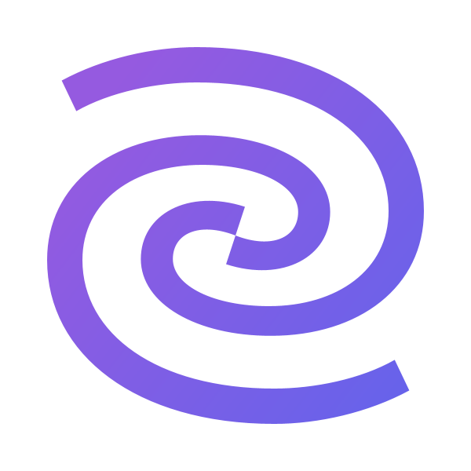

Cycle time ↓
Throughput ↑
ROI
SOL unifies AI tool telemetry with PR, CI/CD, and workflow data so you can see where AI actually accelerates delivery—and where it doesn’t.
Model where AI will have the highest impact next. Prioritize adoption and spend using data, not guesswork.
Mirror your engineering flow in a metadata-first model. See bottlenecks and cycle time compression in real time.
Get specific, actionable guidance to improve AI usage by repo, team, and workflow—backed by your own telemetry.
Metadata-first digital twin with forecasting and bottleneck detection.
See how SOL turns AI from an experiment into a measurable advantage.